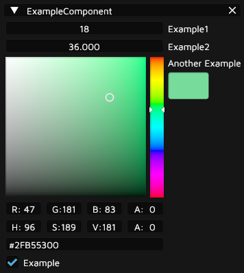

Editor
For the group game project Toys or Sus, I was tasked with creating a level editor tool for the level designers in my group to use. During the group's previous project, Loa of Death, the levels were built in Unity's editor and then exported to our engine using a script. Whilst this approach did work, we felt it was an unergonomic and inconvenient pipeline in the long run. We had also decided that the new project was only going to have one big level, which all level designers and the artists would work on at the same time, which made building a new level-creation pipeline especially imperative. This is why we decided to make our own editor, which was to be tailored to the content creators' needs and wants. A strong emphasis was to be put on collaboration features such as easily mergeable levels and eventually also multi-user editing support, making it easy for multiple people to collaborate on the same level.

Design
When it came down to designing the editor itself, it was pivotal to facilitate an open dialogue with the level designers. They initially provided me with a wishlist of features which was used as a guide for its principal design, and as the editor developed and they started using it to build levels, they continually provided feedback on how it could be improved. This made it easy for me to iteratively improve the editor.
Technical Details
The tools I made for the previous project were made using Dear ImGui, so it was a natural choice for the GUI of the editor. It allows for building intuitive user interfaces quickly, but its main advantage is that tools written using it can run on the same engine as the game, reducing the amount of code that needs to be written.
The architecture of the editor was kept simple. At its core, the editor has a window system that is a list of all the windows in the application. Each entry in the list contains the meta-information about the window, its state, as well as a function pointer to update and render that window. The windows are then managed and updated automatically, as well as added to the view menu. This allows for new windows to be integrated with only a few lines of code, making it easy for the other programmers to add their own tools without friction.
The windows I implemented include:
Up to four viewport windows, which was implemented by rendering the scene to a texture which was then drawn to the window using the Image element in ImGui. Additionally, I implemented a gizmo using the ImGuizmo library, to allow for the transformation of objects through the viewport.
Scene hierarchy, using my entity-component-system implementation. The hierarchy can be altered by dragging and dropping entities on other entities in the list.
Investigator window to add/remove components to/from entities as well as edit their properties. More detail on how I implemented this can be found in the Serialization section.
Content browser for importing and browsing assets. I wrote a modular file browser solution, which could also be used as a modal popup. The filesystem under a given root folder is iterated recursively and cached. The cache can be updated by clicking the refresh button. I also added drag-and-drop functionality.
Controls window to easily be able to change gizmo mode, snapping values, editor camera settings, ambient/directional light, and more.
Game window to be able to test the level in-game.
Additional features:
General-purpose undo/redo implementation.
Multi-select allowing for the transformation of multiple entities at once.
Copy/paste of multiple entities, which works between instances of the application.
Entity duplication, either by pressing Ctrl+D or holding Alt and then interacting with the gizmo.
Rudimentary visual scripting, which compiles down to bytecode. This allows basic level functionality to be implemented without writing code and needing to recompile the game.
Serialization & Reflections
Before I started working on the editor application itself, I needed to figure out the best way to store levels on disk. My requirements for the level file format were:
Levels need to be easily mergeable so that multiple people can work on the same level at the same time.
Data from the entity-component-system, pertaining to each entity in the level, need to be easily serializable so that my programmer colleagues would need to write as little boilerplate as possible when implementing new components or altering existing ones.
The format needs to be performant; saving and loading should be very quick.
Changing the content of a component cannot invalidate levels saved with the earlier version, which rules out directly dumping the data into a binary file. The serialization system needs to be able to convert between versions on its own.
The first thing I decided was that each entity in the level was going to be saved in its own file. This way, merging levels would be effortless as long as none of the same entities were edited. As mentioned, I couldn't just write the entity data straight to a binary file, or even a text file, since compatibility needed to remain even when components were changed. A serialization format that would store type information was needed.
At this point, I considered using a third-party library to write and read an existing data interchange format such as JSON, XML, or YAML. In the end, I decided against this approach, since these kinds of libraries are, in my experience, often either slow or require a lot of boilerplate, meaning they won't meet my list of requirements. At this stage, I briefly considered writing my own text file format, but after weighing how long that would take versus the benefits, and after discussing it with the level designers, I decided against that as well. While being beneficial in that text files are mergeable, when they become big they also become difficult to merge, and most people regress to discarding their changes and then redoing them in the editor when faced with a conflict. I decided instead that the entity files would be binary, but would not only store the data itself, but also runtime reflection data so that files could easily be converted between versions by the program.
By far the biggest challenge of the project was the serialization of all the components. I needed a way to inspect members of structs at runtime to be able to save their definitions to a file. The problem is that C++ does not at this time have built-in reflection functionality; there is no way to iterate through members of a struct even at compile time. Reflections are therefore usually implemented by serializing each member individually either through macros, templates, or a combination of the two. A solution akin to this is a great option, and I had even done a similar solution for an earlier game project. However, I felt like it would require too much boilerplate, and therefore not meet my requirements. I wanted a solution where one would only have to change the struct itself when making a change to a component, and not have to write the same thing in other parts of the code. I briefly considered generating the struct itself and its runtime type information using macros, but I felt like this would be too abstract. The only option I felt would meet my requirements would be to parse the struct and generate type information for it at runtime. In hindsight, a better option would probably have been code generation at compile time as a build event, to generate the reflection boilerplate automatically. The solution I went with worked fine, but I feel like code generation would scale better and be safer.
To serialize a component, one only needs to pass its definition to a macro, as well as add its name to a list. The macro then creates a string containing the struct definition which can be parsed*. To parse the string, it is iterated word by word, and each member's type is compared to a list of known types, which also contains each type's size and alignment so that the struct members can be indexed. If the parser encounters something it's not familiar with, it immediately gives up to maintain safety. When saving an entity, the definitions of all its components, created by the parser, are saved alongside the data itself. Then when loading an entity, the definition of each component stored in the entity is compared to the definition of the current version of that component. Members whose type and name match are copied from the correct offset in the file to the correct offset in the application. This way, members can be added, removed, and changed but importing old version will still work. Components can also easily be serialized in the editor, by drawing an ImGui element equivalent to the type of each member of the struct.
Here is a demonstration of the result:
|
 |
After altering the component and recompiling the editor, the data still loads correctly:
|
To optimize level loading as much as possible, I map virtual memory directly to disk when loading entity files, and then parse their content in a single pass. I also use SIMD instructions for string comparisons when importing components. These optimizations have resulted in levels loading quickly, even with thousands of entities. As a result of its speed and ease-of-use, I'm very pleased with how the serialization turned out. It has proven easy to work with for content creators and programmers alike.
Multi-user Editing
Due to the editor having such a strong emphasis on easy collaboration, I felt the only logical next step in its evolution would be to implement multi-user editing support so that multiple people can edit the level in the same editor instance over network. Toward the end of the game project, we had a course where we got to work on a project of our own choosing. I felt this was the perfect opportunity to get multi-user editing implemented. Unfortunately, I estimated I would only have a little more than a week full-time to get it done, which meant I had to cut back a little on what I wanted to do. The biggest feature I had to skip was syncing asset files between clients.
I was originally planning on using UDP for networking, but I ended up going for TCP/IP instead since all packages would need to be guaranteed to make sure all clients are synced, and because I was going to send a lot of data but not very often, since I would only need to sync between clients when an edit is made. I figured TCP/IP was the best option for these purposes, but the time constraint was also a factor.
I began by setting up a separate server application and client functionality within the editor itself. I made an interface in the editor for hosting, joining, and disconnecting. The next thing I did was implement levels being sent between clients so that the host client can send the level to other clients when they join. After this, I implemented functionality for sending gizmo transformations, component adds/removes/edits, add/duplicate/remove entity, as well as lighting changes, and more. The serialization system proved very useful for the multi-user editing, as serializing a level to send it over network was basically already implemented; I just needed to send the data. The same goes for syncing component edits: I could make one general-purpose message for this, and it would work for all components.
Even though the multi-user editing functionality is very basic due to the limited time, it works well and I'm happy with the result. The reception from the level designers and artists has been very positive, and they have been using it to prop and light levels together.